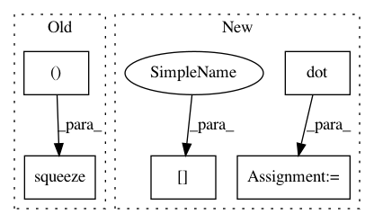

ba8bfb474b108565ac8f77544d0aeb8b1a9a0fdc,dipy/reconst/dandelion.py,SphericalDandelion,spherical_diffusivity,#SphericalDandelion#Any#,92
Before Change
d=ob*(np.log(s[1:])-np.log(s[0]))
d=d.reshape(1,len(d))
res=np.dot(d,self.weighting[1:,:])
return np.squeeze(np.dot(d,self.weighting[1:,:]))
def xa(self):
return self.XA
After Change
"""
final_sphere=np.zeros((len(d),self.odf_vertices.shape[0]))
for i in range(len(d)):
final_sphere[i]=d[i]*np.abs(np.dot(self.gradients[i+1],self.odf_vertices.T)**(2))
return np.max(final_sphere,axis=0)
def xa(self):
return self.XA
In pattern: SUPERPATTERN
Frequency: 3
Non-data size: 5
Instances
Project Name: nipy/dipy
Commit Name: ba8bfb474b108565ac8f77544d0aeb8b1a9a0fdc
Time: 2011-02-09
Author: garyfallidis@gmail.com
File Name: dipy/reconst/dandelion.py
Class Name: SphericalDandelion
Method Name: spherical_diffusivity
Project Name: geomstats/geomstats
Commit Name: 2e296adb05f62e4821c36b6f42b1470bdb10eaa6
Time: 2018-02-05
Author: ninamio78@gmail.com
File Name: geomstats/special_euclidean_group.py
Class Name: SpecialEuclideanGroup
Method Name: compose
Project Name: danielegrattarola/keras-gat
Commit Name: 9d56361641a64ff73ac630812ecd4964eedbc7aa
Time: 2017-11-09
Author: daniele.grattarola@gmail.com
File Name: gat/graph_attention_layer.py
Class Name: GraphAttention
Method Name: call